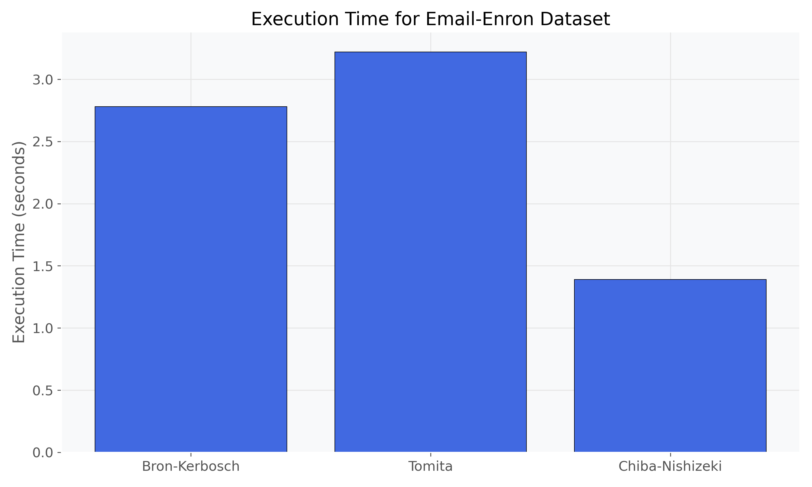
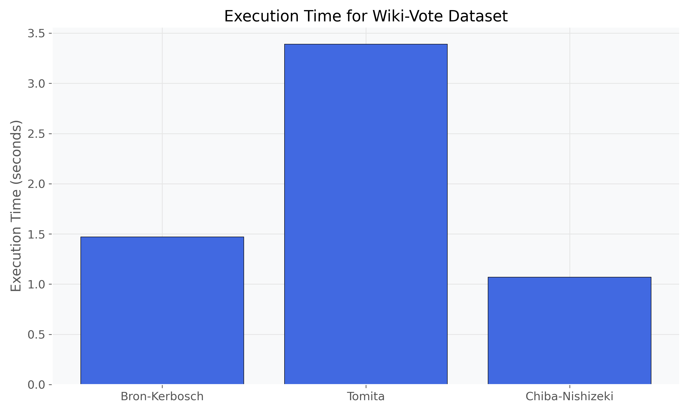
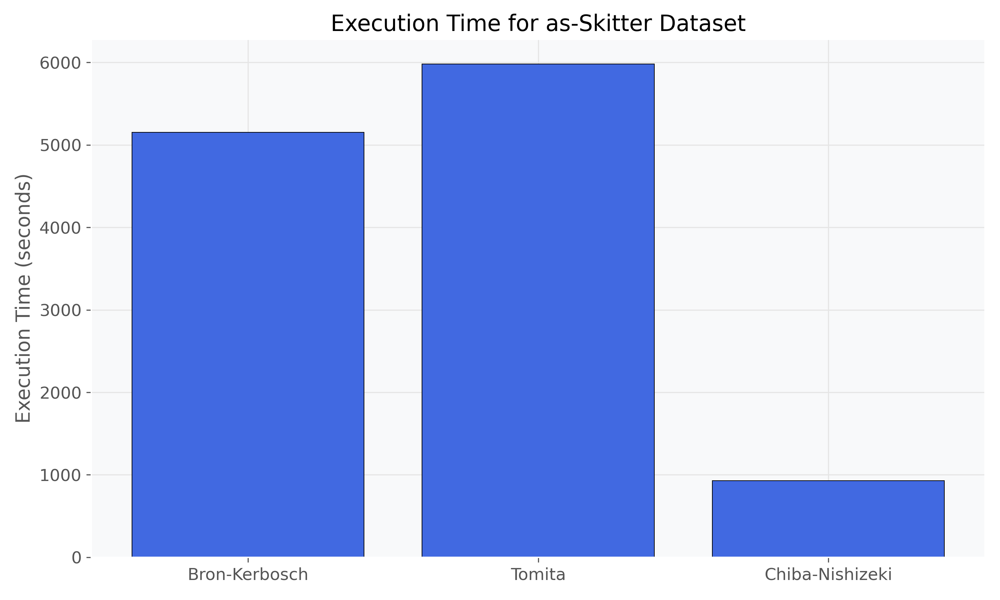
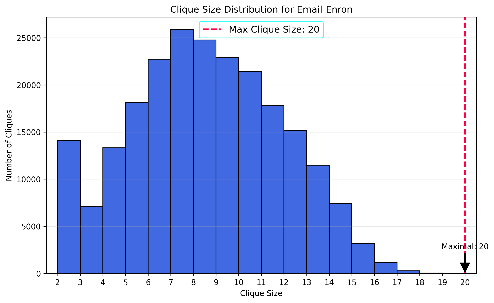
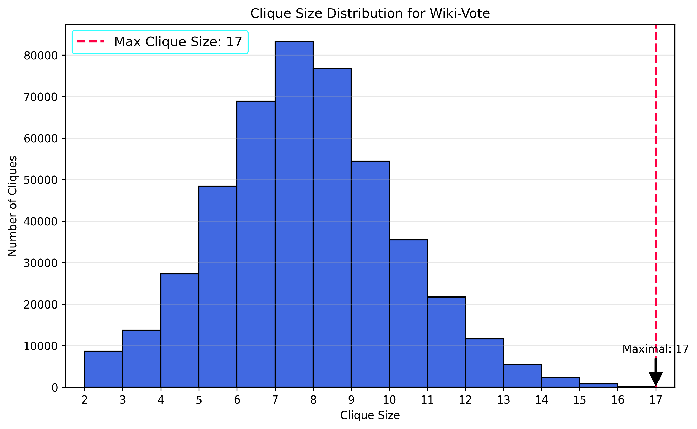
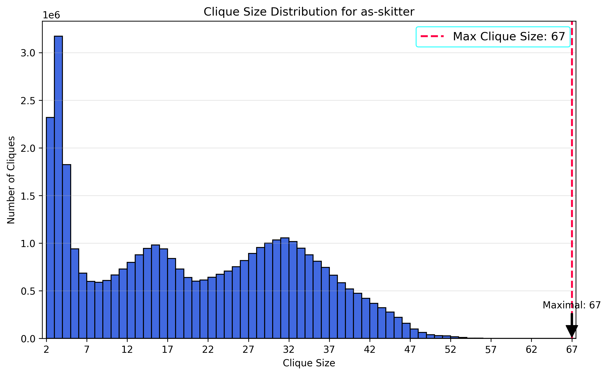

Project Overview
This project presents a comprehensive implementation and comparative analysis of three classical algorithms for maximal clique enumeration in undirected graphs:
- Bron-Kerbosch algorithm with degeneracy ordering
- Tomita algorithm
- Chiba-Nishizeki algorithm
We evaluated these algorithms on three real-world network datasets from the Stanford SNAP collection, analyzing their performance characteristics and insights into network structures.
Algorithms
Bron-Kerbosch
A recursive backtracking algorithm introduced in 1973, enhanced with degeneracy ordering to minimize branching.
Time Complexity: O(3n/3) worst case, but O(d·n·3d/3) for graphs with degeneracy d
Tomita
A branch-and-bound method for maximal clique enumeration that improves efficiency using a pivoting strategy to reduce recursion depth and avoid redundant searches.
Time Complexity: O(3n/3) worst case
Chiba-Nishizeki
Optimized for sparse graphs, focusing on arboricity (a measure of graph sparsity).
Time Complexity: O(a(G)·|E|) where a(G) is the arboricity
Datasets
| Dataset | Nodes | Edges | Description |
|---|---|---|---|
| Email-Enron | 36,692 | 183,831 | Email communication network from Enron |
| Wiki-Vote | 7,115 | 103,689 | Wikipedia voting network for administrator elections |
| as-Skitter | 1,696,415 | 11,095,298 | Internet topology graph from traceroutes |
Key Findings
Algorithm Performance
| Dataset | Bron-Kerbosch | Tomita | Chiba-Nishizeki |
|---|---|---|---|
| Email-Enron | 2.78s | 3.22s | 1.39s |
| Wiki-Vote | 1.47s | 3.39s | 1.07s |
| as-Skitter | 5,154.58s | 5,981.81s | 929.47s |
The Chiba-Nishizeki algorithm consistently outperformed both Bron-Kerbosch and Tomita algorithms on all datasets, with its advantage increasing for larger networks.
Clique Properties
| Dataset | Max Clique Size | Total Maximal Cliques |
|---|---|---|
| Email-Enron | 20 | 226,859 |
| Wiki-Vote | 17 | 459,002 |
| as-Skitter | 67 | 37,322,355 |
Performance Analysis
The following charts visualize the execution time for the three algorithms across our test datasets. The Chiba-Nishizeki algorithm consistently achieved the best performance, with particularly dramatic improvements on the largest dataset (as-Skitter).
Email-Enron Performance
Figure 1: Execution time comparison for the Email-Enron dataset. Chiba-Nishizeki algorithm (1.39s) outperforms both Bron-Kerbosch (2.78s) and Tomita (3.22s).
Wiki-Vote Performance
Figure 2: Execution time comparison for the Wiki-Vote dataset. Chiba-Nishizeki algorithm (1.07s) outperforms both Bron-Kerbosch (1.47s) and Tomita (3.39s).
as-Skitter Performance
Figure 3: Execution time comparison for the as-Skitter dataset. Chiba-Nishizeki algorithm (929.47s) dramatically outperforms both Bron-Kerbosch (5,154.58s) and Tomita (5,981.81s).
Note the significant performance gap on this largest dataset, demonstrating the scalability advantage of the Chiba-Nishizeki algorithm with its O(a(G)·|E|) complexity compared to the exponential worst-case complexity of the other algorithms.
Network Structure Insights
The following histograms show the clique size distribution for each network, revealing distinct patterns that reflect the underlying network structure and formation processes. These distributions provide valuable insights into the cohesiveness and community structure of each network.
Email-Enron Network
Figure 4: Clique size distribution for Email-Enron network showing a bimodal pattern with peaks at sizes 2 and 7, with a maximum clique size of 20.
Bimodal distribution with peaks at clique sizes 2 and 7. The significant number of mid-sized cliques (sizes 6-8) suggests cohesive communication groups within the organization. The existence of a few large cliques (size 20) indicates core groups with dense internal communication.
Wiki-Vote Network
Figure 5: Clique size distribution for Wiki-Vote network showing a strong peak around size 7, with a maximum clique size of 17.
Strongly peaked distribution around clique size 7, with 53.9% of all cliques having sizes between 6 and 8. This represents voting coalitions or groups with similar voting patterns. The relatively small maximum clique size (17) suggests a limit to complete agreement among voters.
as-Skitter Network
Figure 6: Clique size distribution for as-Skitter network showing a complex multimodal pattern with three distinct peaks and a maximum clique size of 67.
Complex multimodal distribution with three distinct peaks. The presence of very large cliques (up to size 67) indicates highly interconnected network regions, possibly representing dense data centers or major internet exchange points.
The first peak at size 2-3 may represent simple point-to-point connections, while the peaks around sizes 15 and 30 likely represent higher-level network structures like regional hubs or exchange points.
Theoretical vs. Practical Performance
While the worst-case time complexity of Bron-Kerbosch and Tomita algorithms is O(3n/3), and the Chiba-Nishizeki algorithm is O(a(G)·|E|), our experimental results provide several insights:
- Arboricity Advantage: The superior performance of Chiba-Nishizeki validates the theoretical advantage of algorithms that exploit graph arboricity, particularly for large sparse networks.
- Degeneracy Benefit: The significant performance improvement of Bron-Kerbosch with degeneracy ordering over Tomita demonstrates the impact of intelligent vertex ordering.
- Implementation Factors: Optimizations such as bit-parallelism, cache-friendly data structures, and pivot selection strategies had substantial impacts on practical performance.
Our performance measurements confirm that the theoretical advantages of the Chiba-Nishizeki algorithm translate directly to practical benefits, especially as network size increases. The arboricity-based approach provides much better scaling on large, sparse real-world networks compared to approaches with exponential worst-case complexity.
Implementation Highlights
Key optimizations implemented include:
- Bit-set representation for fast neighborhood operations in smaller graphs
- Efficient degeneracy ordering computation via bucket sort
- Load-balanced vertex partitioning for parallel execution
- Streaming output for cliques instead of storing them all in memory
- Memory-efficient graph representations
Conclusion
Our implementation and analysis of maximal clique enumeration algorithms revealed a clear performance hierarchy: the Chiba-Nishizeki algorithm consistently outperformed Bron-Kerbosch with degeneracy ordering, which in turn outperformed the Tomita algorithm on all test datasets. This hierarchy was most pronounced on the largest dataset (as-Skitter).
The results validate the theoretical advantages of the Chiba-Nishizeki algorithm for real-world networks, which typically have low arboricity despite potentially having many edges. Implementation-specific optimizations significantly affected performance, sometimes by orders of magnitude.
For a comprehensive analysis, implementation details, and complete results, please refer to the full technical report.
Download Full Technical Report (PDF)